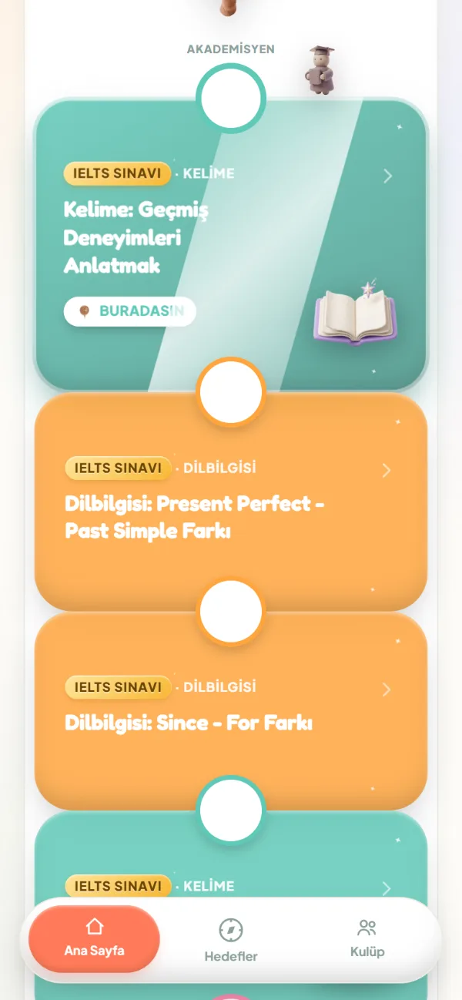

IELTS hazırlık
IELTS'e 10 tam sınavla hazırlan.
Gerçek format, dört bölüm, 10 tam sınav. Ders 1.1 ücretsiz.
Uygulamada Kurslar › IELTS: 10 Tam Sınav.

Sınavda seni ne zorluyor?
Gerçek format
dört bölüm, gerçek sürede
Listening
kayıt bir kez çalar, kaçırma
Reading
süreye yetişmek
Writing
Task 1 ve Task 2 planıyla
Speaking
Part 1, 2, 3, konudan sapmadan
Sınav kaygısı
prova ettikçe azalır
Kurs + uygulama
Sınav kursta, günlük pratik uygulamada.
Kursta 10 tam sınavı bölüm bölüm çalışırsın, Speaking dahil. Kelime, dinleme ve dilbilgisini uygulamanın ücretsiz IELTS yolunda her gün tekrar edersin.
Uygulama ücretsiz. iPhone'da tarayıcıdan açılır.
Uygulamada
Uygulamada “IELTS: 10 Tam Sınav”. Ders 1.1 ücretsiz.
Eğitim, iş veya göç için IELTS Academic ya da General Training'e girecek herkes için. En iyi B1'den (yaklaşık 5 band) başlanır; B2 idealdir. Hangi puanın sana yeteceğini IELTS kaç puan yeterli yazısında anlattık.
10 tam sınav, 110 ders
Her sınav son IELTS sınavlarının yapısını, soru tiplerini ve sürelerini izler
Academic ya da General Training
Kursta kendi sınav türünü seçersin
Her kısım adım adım
Sınavın tekrar ettiği durumlar, cevaplama yöntemi, gerçek format ve sürede alıştırma, sonra kontrol
Dört bölüm, sınav sırasıyla
Listening, Reading, Writing ve Speaking, gerçek sınav temposunda
Yazılarını Farin okur
Tam kursta yaklaşık 20 yazma görevi; gönderdiğin her yazıyı 2–3 gün içinde değerlendirir
Ders 1.1 ücretsiz
1. sınavın Listening Part 1 dersi, şifre gerekmez
Uygulamada Kurslar › IELTS: 10 Tam Sınav. Tam kurs için bekleme listesine yazıl. Yer açılır açılmaz Farin sana yazar, fiyatı ve ödeme bilgisini iletir, kursa özel şifreni gönderir. Giriş yaptığın her cihazda 12 ay erişim. Resmî IELTS ile bağlantılı değildir. Band puanı vaat etmiyoruz, hazırlık vaat ediyoruz.
Fiyat
IELTS: 10 Tam Sınav, tek ödeme.
Uygulama herkese ücretsiz. Kursun Ders 1.1'i de ücretsiz; tam kurs uygulamada.
Ders 1.1
Tam kurs
Dört bölüm; yaklaşık 20 yazma görevine Farin'den geri bildirim.
Bu kursu istiyorumTam kurs için bekleme listesine yazıl. Yer açılır açılmaz Farin sana yazar, ödeme bilgisini iletir, kursa özel şifreni gönderir.
Merak edilenler
Sıkça sorulan sorular
IELTS için ne kadar sürede hazır olurum?
Seviyene, hedef puanına ve haftalık çalışmana bağlı. Süre ya da puan garantisi vermiyoruz. Ücretsiz Ders 1.1'i (1. sınavın Listening Part 1 dersi) çözünce nereden başladığını ve hangi bölüme daha çok zaman ayırman gerektiğini görürsün.
IELTS Speaking için özel pratik var mı?
Evet. Kursun her sınavında Speaking var: Part 1, 2 ve 3'ü gerçek formatta ve sürede çalışır, ezber yerine doğal cevap kurmanın yöntemini adım adım öğrenirsin.
Reading, Writing ve Listening de var mı?
Evet. Uygulamadaki “IELTS: 10 Tam Sınav” kursu dört bölümün tamamını kapsar: son IELTS sınavlarının yapısını, soru tiplerini ve sürelerini izleyen 10 tam sınav ve bir bonus sınav (110 ders), Academic ya da General Training. Her kısımda sınavın tekrar ettiği durumlar, cevaplama yöntemi, gerçek format ve sürede alıştırma, sonra kontrol var. Tam kurstaki yaklaşık 20 yazma görevini Farin 2–3 gün içinde değerlendirir. Ders 1.1 ücretsiz.
Belirli bir bant puanı garanti ediyor musunuz?
Hayır. Sonuç birçok şeye bağlı. Sunduğumuz şey düzenli, gerçek formata yakın bir hazırlık.
Hiç IELTS sınavına girmedim, nereden başlamalıyım?
Ücretsiz Ders 1.1 ile başla: 1. sınavın Listening Part 1 dersinde formatı tanırsın ve nerede zorlandığını görürsün. Kursa en iyi B1'den (yaklaşık 5 band) başlanır; B2 idealdir.
Sınav yolun burada başlıyor.
Ders 1.1 ücretsiz. Puan değil, hazırlık sözü veriyoruz.
Öğrenmen gerektiği için değil, gidecek bir yerin olduğu için.